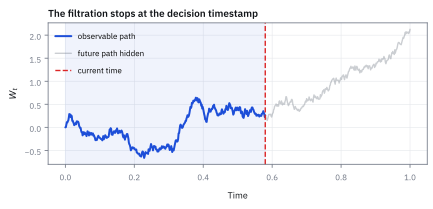
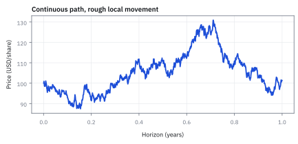

10.3 Three Properties GBM Inherits from Brownian Motion
สามคุณสมบัติของ Geometric Brownian Motion (GBM) ที่สืบทอดจาก random walk
หุ้น \$100 เดินตาม GBM drift 10% ต่อปี ความผันผวน 25% โอกาสที่อีกหนึ่งปีราคาจะเกิน \$130 และต่ำกว่า \$70 เป็นเท่าไร ทั้งที่สองเป้าห่างจาก 100 เท่ากันที่ \$30?
เฉลย: เกิน 130 คือ 21.9% ต่ำกว่า 70 คือ 4.4% ต่างกันเกือบห้าเท่า เพราะใน log +30% คือ +0.262 แต่ −30% คือ −0.357 ไกลกว่า และจุดกลางของ log return คือ 0.06875 ไม่ใช่ 0.10 ถ้าเผลอใช้ 0.10 จะได้ 25.8% สูงเกินจริง 3.9 จุด
เริ่มจากสองเป้าที่ห่างจากราคาปัจจุบันเท่ากัน
หุ้นอยู่ที่ \$100 drift 10% ต่อปี ความผันผวน 25% อีกหนึ่งปีโอกาสที่ราคาจะเกิน \$130 กับโอกาสที่จะต่ำกว่า \$70 ควรจะใกล้เคียงกัน เพราะสองเป้าห่างจาก \$100 เท่ากันคือ \$30
ของจริงคือ 21.9% กับ 4.4% ต่างกันเกือบห้าเท่า
สาเหตุคือราคาขยับด้วยการคูณ ไม่ใช่การบวก ในโลกของการคูณ บวก 30% กับลบ 30% ไม่ได้อยู่ห่างเท่ากัน หัวข้อนี้ตามรอยว่าสมบัติของ Brownian motion แต่ละข้อส่งต่อมาถึงราคาอย่างไรบ้างหลังผ่าน exponential และข้อไหนที่เปลี่ยนรูปไปเลย
ศัพท์ที่ใช้ในหัวข้อนี้
- independent increments
- สมบัติที่ random change ในช่วงเวลาไม่ทับกันไม่ให้ข้อมูลกัน ใช้ทำให้ future price ratio ของ GBM ไม่ต้องอ้างอิง path ก่อนหน้า
- continuous path
- path ที่เปลี่ยนผ่านทุกค่าระหว่างสองเวลาโดยไม่มี jump ใช้เป็นสมมติฐานให้ hedge rebalancing และ diffusion mathematics เขียนได้
- lognormal distribution
- distribution ของ positive random variable ที่ logarithm เป็น normal ใช้บรรยาย terminal price ของ GBM และคำนวณ probabilities จาก normal table
- quantile
- จุดตัดของ distribution ที่มีโอกาสสะสมตามระดับที่เลือก ใช้ตั้ง scenario, limit และ stress threshold เช่น 5th percentile
- tail probability
- probability ที่ outcome อยู่ไกลกว่าระดับกำหนดด้านซ้ายหรือขวา ใช้วัดโอกาส breach ของ target หรือ loss threshold
- strike
- ราคาอ้างอิงที่กำหนดสิทธิ์ซื้อหรือขายใน option contract ใช้เปรียบ payoff threshold กับราคาของ underlying
- underlying
- สินทรัพย์ที่ option หรือ derivative อ้างอิงราคา ใช้ระบุ price process ที่สร้างโอกาสและ hedge exposure
- hedge
- position ที่เพิ่มเพื่อลด sensitivity ของ exposure เดิมต่อ market move ใช้จำกัด loss แต่ไม่ลบความเสี่ยงทุกชนิด
- standard deviation (SD)
- ความกว้างของการกระจายในหน่วยเดียวกับข้อมูล ใช้วัดว่าเป้าราคาอยู่ห่างจุดกลางกี่ช่วง
สัญลักษณ์ที่ใช้ในหัวข้อนี้
| สัญลักษณ์ | ความหมาย | หน่วย |
|---|---|---|
| $R_{t,s}$ | gross return ratio $S_{t+s}/S_t$ | ไม่มีหน่วย |
| $s$ | length ของ future interval | year |
| $\mathcal F_t$ | information set ที่รู้ได้ถึงเวลา $t$ | ชุดข้อมูล |
| $K$ | price threshold หรือ strike-like level | USD/share |
| $z$ | standardized normal score | ไม่มีหน่วย |
| $\Phi(z)$ | normal cumulative probability ถึง $z$ | probability |
สามสมบัติส่งต่อจาก driver เดียว
GBM ไม่ได้เกิดจากชื่อที่ดูหรู; มันคือ exponential transform ของ Brownian Motion เมื่อ Brownian increments เป็นอิสระ, paths ต่อเนื่อง และ increments normal, price จึงรับ independent multiplicative ratios, continuity และ lognormal terminal distribution ตามลำดับ
ขั้นที่ 1 — property 1 — future ratio ตัดอดีตออก
สมบัติแรกคือสัดส่วนราคาในอนาคตไม่ขึ้นกับอดีตเลย สี่บรรทัดนี้แสดงว่ามันเป็นผลโดยตรงของการที่ราคาเขียนเป็นราคาเดิมคูณอะไรสักอย่าง และเป็นเหตุผลที่ทั้งเล่มนี้วิเคราะห์ผลตอบแทน ไม่ใช่ระดับราคา
สิ่งที่ต้องพิสูจน์คืออนาคตไม่ขึ้นกับอดีต แต่ต้องระวังว่า ไม่ขึ้นกับอดีต ในความหมายไหน เขียนสูตรของหัวข้อ 10.1 โดยแทนก้อนสุ่มด้วย increment จริง แล้วหารด้วยราคาปัจจุบัน
พอหารแล้วฝั่งขวาไม่มีราคาเหลืออยู่เลย มีแต่เลขคงที่กับ increment ที่เกิดหลังเวลา $t$ ซึ่งสมบัติข้อแรกของ Brownian motion ในหัวข้อ 9.1 บอกว่าเป็นอิสระจากอดีต และ function ของของที่เป็นอิสระก็ยังเป็นอิสระ ตามกฎเดียวกับที่หัวข้อ 5.5 ใช้แยกค่าเฉลี่ยของผลคูณ
ข้อควรระวังอยู่ตรงนี้ ระดับราคาเองไม่เป็นอิสระจากอดีต เพราะมี $S_t$ คูณอยู่ข้างหน้า สิ่งที่เป็นอิสระคือตัวคูณ ไม่ใช่ตัวราคา อดีตกำหนดว่าเราเริ่มจากไหน แต่ไม่กำหนดว่าจะไปทางไหนต่อ
ขั้นที่ 2 — ทำไมส่วนต่างราคาเป็นดอลลาร์ถึงไม่ตัดขาดจากอดีต
ห้าบรรทัดนี้ชี้ให้เห็นความแตกต่างสำคัญระหว่าง arithmetic random walk กับ geometric random walk: ใน Brownian motion ดั้งเดิม ส่วนต่าง $\Delta W$ เป็นอิสระจากจุดเริ่มต้น แต่ใน GBM ส่วนต่างดอลลาร์ $\Delta S_t$ มี variance เป็นสัดส่วนกับ $S_t^2$
ลองแทนตัวเลขจริง: ถ้า $\mu=0.10, \sigma=0.25$ และ $s=1$ ปี หุ้นราคา \$100 จะมี standard deviation ของการเปลี่ยนแปลงประมาณ \$28.07 ขณะที่หุ้นราคา \$20 จะมีเพียง \$5.61 เทรดเดอร์ที่ตั้งขนาด position เป็นจำนวนหุ้นเท่ากันจึงแบกความเสี่ยงดอลลาร์ไม่เท่ากันอย่างมหาศาล
ข้อผิดพลาดที่พบบ่อยที่สุดคือการคิดว่า เมื่ออัตราส่วนราคาเป็นอิสระจากอดีตแล้ว การเปลี่ยนแปลงของราคาดอลลาร์ $\Delta S_t$ จะเป็นอิสระด้วย ความจริงไม่ได้เป็นเช่นนั้น เพราะระดับราคาปัจจุบัน $S_t$ ถูกดึงออกมาเป็นตัวคูณอยู่หน้าวงเล็บ
เมื่อคำนวณ conditional variance ของ $\Delta S_t$ ตัวคูณ $S_t$ จะถูกยกกำลังสองหลุดออกมาข้างนอก ทำให้ความแปรผันของเม็ดเงินในอนาคตผูกติดกับระดับราคาปัจจุบันอย่างแยกไม่ออก
หุ้นราคา \$500 จะมี variance ของการขยับเป็นดอลลาร์สูงกว่าหุ้นราคา \$20 ถึง 625 เท่า สิ่งที่ตัดขาดจากอดีตจึงมีเพียง ratio ของผลตอบแทนเท่านั้น ส่วนเงินดอลลาร์ยังจำระดับราคาเดิมเสมอ
อิสระของ ratio ไม่ใช่คำทำนายว่าตลาดไม่มี memory
นี่เป็น property ภายใต้ GBM, ไม่ใช่ fact ของตลาด. Autocorrelation, volatility clustering และ order-flow dependence สามารถทำให้ historical data มี structure; quant ใช้ความเบี่ยงเบนจากสมมติฐานนี้เป็น hypothesis แต่ต้องทดสอบ out-of-sample
แล้วเอาไปใช้ทำอะไรได้จริงบ้าง
สามสมบัติที่สืบทอดมา ทำให้คำนวณโอกาสของเหตุการณ์ราคาได้ในไม่กี่บรรทัด
ใช้ตอบคำถามที่ลูกค้าถามบ่อยที่สุด คือโอกาสที่ราคาจะถึงเป้าหมายภายในหนึ่งปีเป็นเท่าไร
ใช้คำนวณโอกาสที่จะขาดทุนเกินเกณฑ์ ซึ่งเป็นตัวเลขที่ใช้ตั้งจุดตัดขาดทุน
ใช้ยืนยันว่าราคาในแบบจำลองนี้ไม่มีทางติดลบ ซึ่งเป็นเหตุผลหลักที่เลือกใช้มัน
Figure 10.3a — ตัวคูณเหมือนกัน แต่ส่วนต่างเป็นดอลลาร์กว้างต่างกัน

สองเส้นคือ density ของส่วนต่างราคาหนึ่งปี เมื่อเริ่มที่ \$100 กับ \$20 drift 10% ความผันผวน 25% ตัวคูณของราคามีหน้าตาเดียวกัน แต่ SD ของส่วนต่างเป็นดอลลาร์คือ 28.07 กับ \$5.61 ตามขั้นที่ 2 ห่างกัน 5 เท่าเท่ากับราคาเริ่มต้น ส่วนต่างเป็นดอลลาร์จึงยังผูกกับราคาวันนี้ ตัวคูณต่างหากที่ตัดขาดจากอดีต
ขั้นที่ 3 — property 2 — continuity survives exponential map
สมบัติที่สองคือความต่อเนื่องยังอยู่หลังผ่าน exponential สี่บรรทัดนี้ไม่ได้ซับซ้อน แต่ผลของมันหนักมาก เพราะมันแปลว่าแบบจำลองนี้ ไม่ยอมให้มีการกระโดดของราคาเลย ทั้งที่ข่าวผลประกอบการทำให้เกิดทุกไตรมาส
คำถามคือเส้นราคาขาดตอนได้ไหม ตอบโดยไล่ตามโครงสร้างของสูตรจากข้างในออกมา ข้างในสุดคือ Brownian motion ซึ่งสมบัติข้อที่สามในหัวข้อ 9.1 บอกว่าไม่ขาดตอน แม้เส้นจะหยาบจนหา derivative ไม่ได้ก็ตาม
ชั้นถัดมาคือคูณด้วยเลขคงที่และบวกเลขคงที่ ซึ่งแค่ยืดกับเลื่อน ไม่ทำให้เส้นขาด แล้วชั้นนอกสุดคือ exponential ซึ่งต่อเนื่องทุกจุด ต่อ function ต่อเนื่องเข้าด้วยกันผลก็ยังต่อเนื่อง ราคาจึงไม่กระโดดข้ามค่าใด ๆ
และนั่นคือจุดที่แบบจำลองนี้ต่างจากตลาดจริง ซึ่งมีช่องว่างราคาตอนเปิดตลาดแทบทุกวัน ข้อนี้ไม่ใช่รายละเอียดเล็ก ๆ เพราะกลยุทธ์ที่อาศัยการขยับทีละนิดจะพังทันทีเมื่อราคากระโดด
Figure 10.3b — เส้นทางต่อเนื่อง แต่ไม่เรียบ

หนึ่งปีของหุ้น \$100 แบ่ง 1,200 ก้าว ความผันผวน 25% เส้นไม่มีจุดขาด ลากได้โดยไม่ต้องยกดินสอ ตามขั้นที่ 3 แต่ซูมเข้าไปช่วงไหนก็ยังหยัก หาความชันไม่ได้ การปรับ hedge ต่อเนื่องในทฤษฎีจึงเป็นอุดมคติ ของจริงปรับได้เป็นช่วง ๆ
ขั้นที่ 4 — property 3 — normal in log space
สมบัติที่สามคือความเป็นระฆังย้ายไปอยู่ที่ log ของราคา ไม่ใช่ที่ราคาเอง หกบรรทัดนี้จบด้วยเหตุผลว่าทำไมราคาถึงไม่ติดลบ ซึ่งเป็นข้อที่แบบจำลองแบบบวกธรรมดาทำไม่ได้
ยกสูตรของหัวข้อ 10.1 มาที่เวลา $T$ แล้วใส่ log ทั้งสองข้าง เลขชี้กำลังโผล่ออกมาทั้งก้อน ส่วน Brownian ที่เวลา $T$ เป็นระฆังที่ variance เท่ากับ $T$ ตามหัวข้อ 9.1
หาจุดกลางกับความกว้างด้วยกฎค่าคงที่และกฎตัวคูณกำลังสอง แล้วประกอบกลับ ข้อความสำคัญคือความเป็นระฆังอยู่ที่ log ของสัดส่วนราคา ไม่ได้อยู่ที่ราคา คนที่อ่านผิดตรงนี้จะคำนวณความน่าจะเป็นผิดทั้งหมด
บรรทัดสุดท้ายคือผลที่สำคัญที่สุดของทั้งหัวข้อ เลขชี้กำลังจะติดลบแค่ไหนก็ได้ แต่ exponential ของมันยังเป็นบวกเสมอ ราคาจึงเข้าใกล้ศูนย์ได้ แต่ไม่มีทางแตะศูนย์หรือติดลบ นั่นคือเหตุผลหลักที่เลือกใช้มันแทนระฆังบนราคาตรง ๆ
ขั้นที่ 5 — แปลง threshold เป็น normal score
จะใช้สามสมบัตินั้นตอบคำถามจริง ต้องแปลงราคาเป้าหมายไปอยู่บนแกน log ก่อน ขั้นนี้คือขั้นตอนเดียวกับที่หัวข้อ 14.2 จะใช้สร้างสูตร Black–Scholes ต่างกันแค่ว่าตรงนั้นต้องคำนวณค่าเฉลี่ยของ payoff ไม่ใช่แค่ความน่าจะเป็น
อยากได้ความน่าจะเป็นที่ราคาทะลุเกณฑ์ แต่ distribution ที่เรารู้อยู่บน log ไม่ได้อยู่บนราคา จึงต้องขนอสมการไปอยู่ในโลกของ log ทั้งก้อน ใส่ log ทั้งสองข้างได้โดยไม่พลิกเครื่องหมาย เพราะ log เพิ่มขึ้นเสมอ และราคาเป็นบวกเสมอตามขั้นที่ 4
ลบ log ของราคาเริ่มต้นออกทั้งสองข้าง เพื่อให้ฝั่งซ้ายกลายเป็น log return ที่เรารู้ distribution แล้วแปลงเป็นหน่วยมาตรฐานด้วยวิธีเดียวกับหัวข้อ 1.9 คือลบจุดกลางแล้วหารความกว้าง ต้องทำกับฝั่งขวาด้วย ไม่อย่างนั้นอสมการจะไม่เท่าเดิม
พอทั้งสองฝั่งถูกแปลงแล้ว คำถามเรื่องราคากลายเป็นคำถามเรื่องระฆังมาตรฐาน ซึ่งอ่านจากตาราง $\Phi$ ตัวเดียวกับบทที่ 1 ได้เลย เครื่องหมายลบมาจากการที่ $\Phi$ ให้พื้นที่ทางซ้าย แต่เราถามหางขวา
Figure 10.3c — เป้า 130 กับ 70 ห่างจาก 100 เท่ากัน แต่โอกาสไม่เท่ากัน

ราคาหลังหนึ่งปี เริ่ม \$100 drift 10% ความผันผวน 25% พื้นที่เขียวทางขวาของ 130 คือ 21.9% พื้นที่แดงทางซ้ายของ 70 คือ 4.4% ทั้งที่ห่างจาก 100 เท่ากัน \$30 เพราะใน log ระยะถึง 130 คือ 0.262 แต่ระยะถึง 70 คือ 0.357 และ drift ยังดันไปทางขวาด้วย
ขั้นที่ 6 — checked target probability
เปลี่ยนราคาเป้าหมายเป็น log ก่อน แล้วเทียบกับจุดกลางของ log return หารด้วยความกว้างหนึ่งหน่วย จึงได้ระยะเป็นจำนวน standard deviation
$m$ คือจุดกลางของ log return หนึ่งปี ซึ่งไม่ใช่ $\mu$ เปล่า ๆ เพราะต้องหักครึ่งของ variance ออกก่อน
ราคาเป้าหมาย 130 คือ 1.30 เท่าของราคาเริ่ม log ได้ 0.262364 ห่างจากจุดกลางไป 0.7744 หน่วย standard deviation
ขั้นที่ 7 — checked downside probability
ฝั่งลงใช้วิธีเดียวกันเป๊ะ เปลี่ยนแค่ราคาเป้าหมาย
ราคา 70 อยู่ห่างจากราคาเริ่ม 30 หน่วยเท่ากับฝั่ง 130 แต่ใน log space ห่างกว่ามาก: 1.70 หน่วยเทียบกับ 0.77 หน่วย โอกาสสองฝั่งจึงไม่เท่ากัน ทั้งที่ระยะเป็นเงินเท่ากัน
ขั้นที่ 8 — ซอยปีเป็นสองครึ่งปี: คำตอบต้องเท่าเดิม
ถ้าแบบจำลองถูก การดูข้อมูลรายครึ่งปีต้องให้คำตอบเดียวกับรายปี สมบัติข้อ 1 คือใบอนุญาตที่ทำให้ variance ของสองท่อนบวกกันได้
log ทำให้การคูณสองท่อนกลายเป็นการบวก แต่ละท่อนยาวครึ่งปี จุดกลางและ variance จึงเป็นครึ่งหนึ่งของรายปี บวกกันแล้วได้ 0.06875 กับ 0.0625 เท่าเดิม
บรรทัดล่างคือความผิดที่พบบ่อย เอา SD ของสองท่อนมาบวกกันได้ 0.354 ไม่ใช่ 0.25 เพราะสิ่งที่บวกกันได้คือ variance ไม่ใช่ SD และบวกได้ก็ต่อเมื่อสองท่อนเป็นอิสระต่อกัน ซึ่งสมบัติข้อ 1 รับประกันไว้ ถ้าไม่อิสระจะมีพจน์ 2Cov(A, B) ค้างอยู่
ขั้นที่ 9 — ตรวจคำตอบ และดูว่าพลาดตรงไหนได้บ้าง
ตรวจความสมเหตุสมผลด้วย median ค่าเฉลี่ย และผลรวมของสามช่วง แล้ววัดความเสียหายของความผิดสองแบบที่พบบ่อย
130 อยู่เหนือ median 107.12 และ 70 อยู่ใต้ ทั้งสองโอกาสจึงต้องต่ำกว่า 50% ซึ่งจริง และสามช่วงรวมกันได้ 21.9 + 4.4 + 73.6 = 100% ตรงกัน
ใส่ μ = 0.10 แทนจุดกลางของ log ได้ 25.8% สูงเกินจริง 3.9 จุด เพราะให้เครดิตกับ drift ที่ไม่มีอยู่ในโลกของ log ส่วนการเปลี่ยน σ จาก 25% เป็น 30% ดันโอกาสเกิน 130 เป็น 24.5% ทันที σ เป็นค่าที่ประมาณมา ไม่ใช่ค่าที่รู้ ความไม่แน่นอนของมันจึงต้องรายงานคู่กับโอกาสเสมอ
สมบัติข้อ 2 คือข้อที่ผิดที่สุดในโลกจริง เส้นทางต่อเนื่องแปลว่าถ้าตั้ง stop-loss ที่ 70 จะได้ 70 พอดี แต่ถ้าข่าวร้ายออกตอนตลาดปิด ราคาเปิดวันรุ่งขึ้นอาจอยู่ที่ 55 เลย stop-loss ไม่ได้ช่วยอะไร
คำตอบ — โอกาสถึงเป้า 130 และหลุด 70 ในหนึ่งปี
คำถาม: หุ้น \$100 drift 10% ความผันผวน 25% โอกาสเกิน 130 และต่ำกว่า 70 ในหนึ่งปีเป็นเท่าไร และซอยเป็นสองครึ่งปีแล้วต้องได้เท่าเดิมไหม?
ของที่มี: ขั้นที่ 4 ถึง 9
1 จุดกลางของ log return คือ 0.10 − 0.03125 = 0.06875 และ SD คือ 0.25
2 โอกาสเกิน 130 คือ 1 − 0.7807 = 21.9% ที่ z = 0.7744
3 โอกาสต่ำกว่า 70 คือ 4.4% ที่ z = −1.7017 และโอกาสอยู่ระหว่าง 70 ถึง 130 คือ 73.6%
4 ซอยเป็นสองครึ่งปีได้ค่าเฉลี่ยของ log return 0.06875 และ variance 0.0625 เท่าเดิม เพราะสมบัติข้อ 1 ให้บวก variance ได้
ตรวจเองใน 10 วินาที: z ≈ 0.77 อยู่ระหว่าง 0 กับ 1 คำตอบจึงต้องอยู่ระหว่าง 16% กับ 50% และค่อนไปทาง 16% ซึ่ง 21.9% ผ่าน
แปลว่าอะไร: บทวิจัยที่ตั้งเป้า \$130 กำลังพูดถึงเหตุการณ์ที่มีโอกาส 21.9% ไม่ใช่ 50% และการตั้งเป้ากำไรกับ stop-loss ห่างเท่ากันเป็นเงินจะมีโอกาสเกิดไม่เท่ากันเสมอ ถ้าเปลี่ยน μ เป็นอัตราดอกเบี้ยแล้วคิดลดกลับ จะได้ราคา option แบบ Black–Scholes ในหัวข้อ 14.2
โค้ดตรวจ 21.9%, 4.4%, 73.6% การซอยครึ่งปี และความผิดสองแบบ
import numpy as np
from scipy.stats import norm
S0, mu, sigma = 100.0, 0.10, 0.25
m = mu - sigma**2 / 2
assert abs(m - 0.06875) < 1e-12
up = 1 - norm.cdf((np.log(1.3) - m) / sigma)
dn = norm.cdf((np.log(0.7) - m) / sigma)
assert abs(up - 0.2193) < 1e-4 and abs(dn - 0.0444) < 1e-4 and abs(1 - up - dn - 0.7363) < 1e-4
assert abs(S0 * np.exp(m) - 107.12) < 0.01 and abs(S0 * np.exp(mu) - 110.52) < 0.01
assert abs(1 - norm.cdf((np.log(1.3) - mu) / sigma) - 0.2580) < 1e-4 # used mu by mistake
assert abs(1 - norm.cdf((np.log(1.3) - (mu - 0.3**2 / 2)) / 0.3) - 0.2447) < 1e-4 # sigma 30%
assert abs(2 * np.sqrt(0.03125) - 0.35355) < 1e-5 # adding SDs is wrong
assert abs(S0 * np.exp(mu) * np.sqrt(np.exp(sigma**2) - 1) - 28.07) < 0.01
rng = np.random.default_rng(73) # two independent half-years
A = rng.normal(m / 2, np.sqrt(sigma**2 / 2), 1_000_000)
B = rng.normal(m / 2, np.sqrt(sigma**2 / 2), 1_000_000)
S1 = S0 * np.exp(A + B)
assert abs(np.mean(S1 > 130) - 0.2193) < 0.002 and abs(np.mean(S1 < 70) - 0.0444) < 0.001โค้ดตรวจโอกาสสามช่วงด้วยสูตร median และค่าเฉลี่ย ความผิดสองแบบ แล้วจำลองหนึ่งล้านเส้นทางจากสองครึ่งปีที่อิสระกันว่าได้ 21.9% กับ 4.4% เท่าเดิม
Figure 10.3d — โอกาสที่ราคาหนึ่งปีข้างหน้าจะเกินแต่ละระดับ

แกนนอนคือระดับราคา K แกนตั้งคือโอกาสที่ราคาหลังหนึ่งปีจะเกิน K สำหรับหุ้น \$100 drift 10% ความผันผวน 25% จุดเขียวคือ K = 130 ได้ 21.9% ตามขั้นที่ 6 อ่านระดับอื่นจากเส้นได้ทันที เช่นโอกาสเกิน 100 ราว 61% ตัวเลขนี้ใช้ได้เมื่อระบุช่วงเวลา drift และความผันผวนกำกับไว้ด้วยเสมอ
จาก formula สู่ risk control
store input timestamp, corporate-action adjusted spot, calendar convention และ parameter version กับทุก probability. Trigger ไม่ควรเป็นแค่ “21.9%”; ต้องระบุว่า one-year, physical $\mu=10\%$, $\sigma=25\%$, continuous no-jump GBM สำหรับ การประเมินค่าของแบบจำลอง ให้เปลี่ยน probability measure ตามกติกา pricing ในบทหลัง ไม่เอา physical probability ไปตั้งราคา
ตัวอย่างเสริม — แปลงโอกาสเป็นเงินของ position 50,000 หุ้น
สำหรับ 50,000 shares ณ \$100, analyst รายงานโอกาสปิดเกิน \$130 ในหนึ่งปี 21.9% และโอกาสต่ำกว่า \$70 เท่ากับ 4.4%. threshold values แปลเป็น position values \$6.5 ล้าน และ \$3.5 ล้าน ตามลำดับ แต่โอกาสไม่รวม dividends, dilution, earnings gaps หรือ trading costs. risk owner จึงใช้เลขนี้เป็น baseline scenario แล้วเติม jump and volatility stress ก่อนอนุมัติ limit
คำถาม: threshold \$130 และ \$70 แปลงเป็นเงินของ position 50,000 shares ได้กี่ USD?
ของที่มี: 50,000 shares, spot เริ่ม \$100, upper threshold \$130 และ lower threshold \$70
1 คูณ 50,000 ด้วย \$130 ได้ \$6.5 ล้าน. นี่คือมูลค่า position ที่ threshold ด้านบน.
2 คูณ 50,000 ด้วย \$70 ได้ \$3.5 ล้าน. นี่คือมูลค่า position ที่ threshold ด้านล่าง
เฉลย: model ให้โอกาสปิดเหนือ \$130 ที่ 21.9% และต่ำกว่า \$70 ที่ 4.4%; เงินที่เกี่ยวข้องคือ \$6.5 ล้าน กับ \$3.5 ล้าน.
เช็ก 10 วินาที: \$130 − \$70 = \$60 ต่อ share; \$60 × 50,000 = \$3.0 ล้าน ระหว่างสอง threshold
งานจริง: ใช้แปลงโอกาสเป็นจำนวน USD ที่ owner ของ limit เห็นภาพได้
กับดัก: อย่าเอาโอกาสของ GBM ไปแทน earnings gap, dividend, dilution หรือ trading cost ที่ model นี้ไม่ได้ใส่
กับดัก: ใส่ μ แทน log mean ใน z-score
distribution ของ log return ใช้ $\mu-\sigma^2/2$, ไม่ใช่ $\mu$ ใส่ 10% แทน 6.875% ในตัวอย่างทำให้ target probability สูงเกินจริง; ตรวจ dimension ด้วยว่า numerator เป็น log return ไม่มีหน่วย และ denominator $\sigma\sqrt T$ ก็ไม่มีหน่วย
ที่มาที่ไป: สมบัติที่สืบทอดมา และสมบัติที่หายไป
เมื่อเอาก้อนสุ่มมาตรฐานใส่เข้าไปใน exponential เพื่อให้ราคาติดลบไม่ได้ คำถามที่ต้องตอบคือ สมบัติดี ๆ ที่เคยมีนั้นยังอยู่ครบไหม
คำตอบคือบางข้ออยู่ บางข้อหายไป และการรู้ว่าข้อไหนเป็นข้อไหนสำคัญมาก
independence ของช่วงเวลาที่ไม่ทับกันยังอยู่ ความต่อเนื่องของเส้นทางยังอยู่ แต่ความสมมาตรหายไป เพราะ exponential บีบฝั่งซ้ายและยืดฝั่งขวา
ผลของความไม่สมมาตรนั้นมีผลจริงกับการตัดสินใจ คือการตั้งเป้ากำไรและจุดตัดขาดทุนที่ห่างเท่ากันเป็นเงิน จะมีโอกาสเกิดไม่เท่ากัน ซึ่งขัดกับสัญชาตญาณของคนส่วนใหญ่
ที่มาทางประวัติศาสตร์: จาก Wiener Process สู่การส่งต่อสมบัติในตลาดการเงิน
ในปี 1923 Norbert Wiener ได้วางรากฐานทางคณิตศาสตร์ที่รัดกุมให้กับ Brownian motion จนถูกเรียกว่า Wiener process โดยมีสมบัติหลักคือ continuous paths และ independent increments แบบ Gaussian บนระดับค่าตัวเลขจริง
ทว่าในการเงิน Louis Bachelier เคยสมมติว่าผลต่างราคาหุ้นเป็นไปตาม Wiener process ซึ่งก่อให้เกิดข้อผิดพลาดใหญ่สองประการ: หนึ่งคือราคาหุ้นมีโอกาสติดลบ และสองคือหุ้นราคา \$10 กับหุ้นราคา \$500 จะมีความผันผวนเป็นจำนวนดอลลาร์เท่ากันทุกประการ ซึ่งขัดกับพฤติกรรมของนักลงทุนในตลาดอย่างสิ้นเชิง
ในปี 1965 Paul Samuelson จึงแก้แบบจำลองโดยสังเกตว่าสิ่งที่ตลาดรักษาความสม่ำเสมอไว้คือ percentage returns เขาจึงส่งผ่าน Wiener process เข้าสู่ exponential map ทำให้สมบัติทั้งสามข้อถูกสืบทอดมาใน scale ของ log return: อัตราส่วนราคาเป็นอิสระต่อกัน เส้นทางยังคงต่อเนื่อง และ log return มี distribution แบบ Normal
ข้อจำกัด: วิธีนี้สมมติอะไร และของจริงเป็นอย่างไร
| เรื่อง | วิธีนี้สมมติว่า | ของจริงเป็นอย่างไร | ผลที่ตามมาเวลาใช้งาน |
|---|---|---|---|
| การใช้ log | การทำงานบน log ปลอดภัยเสมอ | ระยะเท่ากันบนราคาไม่เท่ากันบน log | การตั้งเป้าขึ้นและลงเท่ากันเป็นเงิน จะได้โอกาสไม่เท่ากัน ซึ่งคนมักคาดไม่ถึง |
| ข้อมูลที่ใส่ | รู้ค่าอัตราและความผันผวน | ประมาณมาทั้งคู่และอัตราประมาณยากมาก | โอกาสที่คำนวณได้เปลี่ยนไปมากเมื่อเปลี่ยนค่าที่ประมาณเล็กน้อย |
| รูปของหาง | หางเป็นไปตามระฆังคว่ำบน log | หางจริงอ้วนกว่า | โอกาสของการขยับแรงมากถูกประเมินต่ำเกินจริง |
แถวแรกเป็นเรื่องที่อธิบายให้ลูกค้าเข้าใจยากที่สุด แต่ต้องอธิบายเพราะมันเปลี่ยนการตัดสินใจ
สรุปที่ใช้ได้จริง
- GBM มี independent future return ratios ภายใต้ model
- GBM paths ต่อเนื่องแต่ไม่ smooth และจึงไม่มี jumps
- log return เป็น Normal ส่วน terminal price เป็น lognormal
- threshold probability ต้องแปลงเป็น log space และใช้ log drift หุ้น \$100 ที่ 10% และ 25% มีโอกาสเกิน 130 ที่ 21.9% และต่ำกว่า 70 ที่ 4.4% ทั้งที่ห่างเท่ากันเป็นเงิน